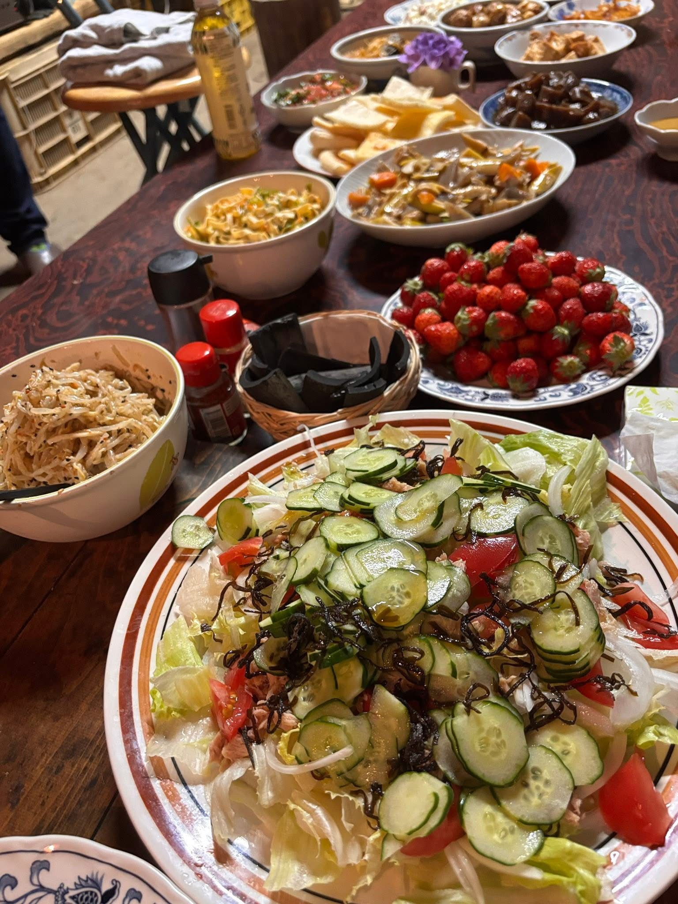

フォレストガーデンで聞いたこと
喋ってると、
なるんよ。
久野陽子さん、ようこちゃんの朝食にあった、食卓と夢と、人が巡っていく話。


この文章は、朝食時の談笑音声をもとに、読みやすさのために言葉を整えた聞き書きです。正式なインタビューではなく、食卓の会話から立ち上がってきた記録です。引用は音声認識の乱れを補いながら整えています。
6月19日の朝、フォレストガーデンの食卓は、もうそれだけで一つの場だった。
自然農の野菜が並び、誰かが食べ、誰かが笑い、誰かが話し、誰かが横から言葉を足す。
久野陽子さん、みんなが呼ぶ「ようこちゃん」は、自然農法イベントの講師であり、食事を作ってくれる人でもある。
大阪で暮らし、富田林で畑をしながら、自然農の野菜を料理して、みんなに食べてもらっている人だ。
でも、この朝のようこちゃんは、講師という肩書きでは全然足りなかった。
料理をしながら、笑いながら、夢を語りながら、人やお金や音楽や食材が巡っていく話をしていた。
とにかく、笑っていた。
笑って、笑って、笑いながら喋っていた。
内容で笑わせるというより、話術で笑わせるというより、在り方そのもので場を笑わせてしまう人だった。
狙っている感じがない。落語みたいに組み立てている感じでもない。
でも、ようこちゃんが喋ると、食卓の空気がほどける。人の身体がゆるむ。誰かがつられて笑う。
これは、かなり高度なことだと思う。
笑いを取りにいくのではなく、在り方で笑いが起きてしまう。
ひとり分では、品数は作られへん
ようこちゃんの話は、ご飯の話から始まっていた。
近所の一人暮らしのおばあさんにご飯を作っている話。ひとりで食べるご飯と、みんなで食べるご飯の違い。
「一人でいっぱい作らないですもんね。品数が作られへん」
何気ない一言だったけれど、ここに食卓の本質がある。
ひとりだと作らないものがある。ひとりだと出てこない品数がある。ひとりだと生まれない会話がある。
でも、みんなで食べるとなると、料理が増える。笑いが増える。誰かの持ち寄りが増える。
食卓は、ただ栄養をとる場所ではない。
人が人に手をかける場所であり、関係性が自然に増えていく場所だった。
ようこちゃんが大切にしていたのは、「みんなで一緒に食べる」ということだった。
それは、ただ楽しいからではない。
一緒にご飯を食べるだけで、そこには教育がある。
関係性がある。
人が育つ場がある。
食べる前に、誰かが作ってくれている。
食べながら、誰かの話を聞く。
食べ終わったら、誰かが片づける。
その全部が、言葉にならない学びになっている。
「みんなで一緒にご飯を食べるって、本当に大切」
ようこちゃんの食卓には、そのことがそのまま現れていた。
先生が前に立って教えるのではない。
誰かが正解を説明するのでもない。
でも、一緒に食べているだけで、人が近くなる。
笑いが起きる。
誰かの本音が出る。
夢が口に出る。
食卓は、もうそれだけで寺子屋だった。
笑いながら、全部を軽くしていく
ようこちゃんのすごさは、重い話を重くしすぎないところにある。
お金の話も、活動費の話も、人に頼る話も、本の話も、老いの話も、未来の話も、ようこちゃんが喋ると、どこか明るくなる。
軽く扱っているわけではない。
むしろ、本気で大事にしている。
でも、深刻に固めない。
笑いながら、食卓に置く。
「足りないと思うんだけどね」
「でも、自分でもう賄ってると思ってるん」
こういう言葉が、笑いの中に出てくる。
困っていることもある。足りないこともある。わからないこともある。
それでも、ようこちゃんはそれを悲壮感にしない。
そのまま喋る。
すると、不思議と場が重くならない。
むしろ、「じゃあどう巡るかな」「誰が来るかな」「何が起きるかな」という明るい余白が生まれていく。
一年ぐらいしたら、百倍ぐらいになって返ってくる
ようこちゃんは、お金の話も、ものすごく軽やかに話していた。
食材を持ってくる。サービスする。自分で出す。けれど、それは損をしているという話ではなかった。
「一年ぐらいしたらね、百倍ぐらいになって返ってくる。もう体験してるんだよ」
この言葉には、ようこちゃんが身体で知っている循環の感覚がある。
目の前の損得で見たら、ただ出しているように見える。
でも、時間をかけて、人を介して、思いもよらない形で返ってくる。
「野菜売りよりすごい」
野菜を売るだけではない。
野菜を育て、料理し、食べてもらい、話が生まれ、音楽が生まれ、人がつながり、別の何かになって戻ってくる。
ようこちゃんの中では、食べものも、お金も、音楽も、人も、全部別々ではなく、同じ流れの中にあるように聞こえた。
音楽も、巡っていく
ようこちゃんの話は、野菜だけで終わらなかった。
音楽の話になった。
自分で歌を売る。CDにする。活動費にする。そんな話が、食卓の上で軽やかに広がっていった。
「私はあれを自分で売るねん」
そこには、誰かに全部整えてもらうのを待つ感じがなかった。
できることからやる。出せるものを出す。面白がって形にする。
ようこちゃんは、音楽を作ってくれる人の話もしていた。
「レオさんの曲があまりにすごいの。すごいすごいって言ったら、レオさんはどんどん作ってくれはって」
そして、ちゃんと確認もしている。
勝手に使うのではなく、著作権はどうですか、と聞く。
すると、相手から「使っていいよ」「じゃんじゃんやって」という許可が返ってくる。
「著作権とかはどうでしょうかって言ったら、いいよって。じゃんじゃんやってって」
夢を語るだけではなく、ちゃんと現実に触れている。
許可を取る。封筒に音楽代を入れる。必要な人へ届ける。
ようこちゃんの中では、夢と現実が離れていない。
料理も、野菜も、音楽も、お金も、人への感謝も、同じ食卓の上に並んでいる。
「今日びっくりしたん。封筒で、これ音楽代って」
ちゃんと笑いながら、ちゃんと渡す。
夢の話をしながら、ちゃんと現実の手触りを持っている。
ようこちゃんの言葉はふわっとしているようで、実は地に足がついている。
人材が降ってくる
この朝、ようこちゃんは何度も「降ってくる」という感覚を話していた。
お金が降ってくる。音楽が降ってくる。人が降ってくる。
それは、何もしなくても都合よく手に入る、という話ではない。
自分が本当に使うべきところへ使い、人のため、場のために動いていると、必要なものが必要な形で現れてくる、という体験の話だった。
「人が降ってくるから、拾ってもらう」
「いろんな人材が降ってくるのが、もう面白い」
「何が降ってくるかわかんないですけど、人が降ってきたりとか、音楽が降ってきたり」
ようこちゃんの話は、理屈として説明するより、現象として聞いた方がいい。
あの人が来た。この音楽が来た。このお金が来た。この話が来た。
一つひとつが偶然のようで、でも、後から振り返るとちゃんとつながっている。
フォレストガーデンの食卓には、そういう「巡ってくるもの」を受け取る明るさがあった。
なるかならんかわからへんけど、喋ってるとなるんよ
この日の会話で、一番ようこちゃんらしいと感じた言葉がある。
「なるかならんかわからへんっていうのを引き受けてないと、ならなんだって言われたら困るからって。わからへんけどって言いながら喋ってると、なるんよ」
これは、夢のつくり方の話だと思った。
絶対にやります。必ず成功します。そういう宣言とは違う。
なるかどうかはわからない。けれど、言葉にしておく。人に話しておく。場に置いておく。
すると、誰かが聞いている。誰かが覚えている。誰かがつないでくれる。
話しているうちに、未来の方から道が近づいてくる。
決め切らない。だけど、黙らない。
わからへんけど、と言いながら喋る。
すると、人が来る。音楽が来る。役割が来る。次の物語が来る。
老人ホームを作りたいんですけど
ようこちゃんは、たくちゃんの話もしていた。
まだ何も形になっていない頃から、たくちゃんが「老人ホームを作りたい」と話していたこと。
「たくちゃんが、老人ホームを作りたいんですけどって言って、まだここまでなってない時に言うのよ」
「この人、変なこと言うわって思うけど、そうそうそうって聞いてたら、それにどんどん出会っていくんですよ」
ここにも同じ感覚がある。
まだ現実になっていないことを、先に言葉にする。
言葉にすると、誰かが聞く。聞いた誰かが動く。出会いが起きる。
未来は、計画書だけでできるのではなく、こういう食卓の会話からも立ち上がる。
本にしたらええやん
この朝の会話の中で、ようこちゃんの本の話が出た。
誰かが、もうタイトルが決まったように話していた。
「74歳でゲット」
笑いながら、でも本当に本になりそうな言葉だった。
表紙の話も出た。ようこちゃんの顔に花を添えるような、そんな話まで広がっていた。
ようこちゃんは、全部を自分で書くというより、喋ったものを誰かがまとめてくれたらいい、というように話していた。
「喋ったら、誰かがちゃんと要約して本を書いてくれはったらええわね」
僕はこの言葉を聞いて、これは本当にそうだと思った。
ようこちゃんの言葉は、すでに物語になっている。
あとは、聞く人がいて、拾う人がいて、並べる人がいればいい。
料理を作るように、言葉も並べていけば、ちゃんと一冊になる。
このあたりの会話も、ずっと笑いの中で進んでいた。
本を出したい、という夢が、重たい決意表明ではなく、食卓の冗談みたいに出てくる。
でも、その冗談みたいな言葉が、実は一番本当の願いだったりする。
「誰かがちゃんと要約して、本を書いてくれはったらええわね」
そう言っていたようこちゃんの言葉が、今こうして記事になっている。
これは、ようこちゃんが喋っていた「喋ってるとなるんよ」の、小さな実例でもある。
花に例える時間
朝食の場では、人を花に例える話も出ていた。
まゆさんは何の花。あの人は何の花。ようこちゃんは何の花。
そこには、ただの遊び以上のものがあった。
人を役割や肩書きで見るのではなく、咲き方で見る時間だった。
「森の中に咲く、八重の椿」
そんな言葉が出てきた。
最初は植物には例えられないと言っていたのに、話しているうちに、ちゃんと花が出てくる。
これも、ようこちゃんの場の力なのだと思う。
人が喋っているうちに、自分でも知らなかった言葉が出てくる。
「開くときになると、いらっしゃい、みなさーんって感じ」
「ちょっと可愛いとかさ、綺麗とか言って」
「あっちゃん、これ開きすぎよって言ったら、何を言ってるんですか、開きすぎでいいんですよって」
花の話をしているのに、どこかようこちゃん自身の話にも聞こえる。
食卓を開いて、人を迎えて、料理を出して、笑って、話して、また誰かの言葉を引き出していく。
「開きすぎでいい」。
この言葉も、ようこちゃんにとても似合っていた。
遠慮して小さく咲くのではなく、開いてしまう。
いらっしゃい、みなさーん、と開いてしまう。
その開き方が、人を笑わせ、人を安心させ、人を喋らせる。
これは、食卓で始まった本の一ページ
この朝は、正式なインタビューではなかった。
だけど、インタビューよりも濃いものがあった。
誰かが質問したわけでもないのに、ようこちゃんの生き方、感覚、夢、循環の思想が、食卓の上にどんどん出てきた。
そして、そのすべてが笑いの中にあった。
「ゴーストライター見つかりました」
そんな冗談みたいな言葉も出ていた。
でも、冗談だけでは終わらない。
本当に、誰かが聞いて、誰かが書いて、誰かが読むものになっていく。
ようこちゃんの言葉は、そういう力を持っている。
自然農の野菜を料理する。
みんなで食べる。
喋る。
笑う。
また笑う。
さらに笑う。
未来の話をする。
本の話をする。
なるかならんかわからへんけど、言葉にしておく。
それだけで、もう場が動いていた。
ようこちゃんの言葉は、誰かがきちんと受け取れば、ちゃんと記事になる。
ちゃんと本の入口になる。
ちゃんと、次の誰かを元気にするものになる。
ようこちゃんの朝食は、料理だけではなかった。
人が集まり、言葉がこぼれ、夢が口に出され、未来が少しだけ先に置かれる時間だった。
喋ってると、なるんよ。
その言葉の通り、この朝の会話も、こうして一つの記事になった。